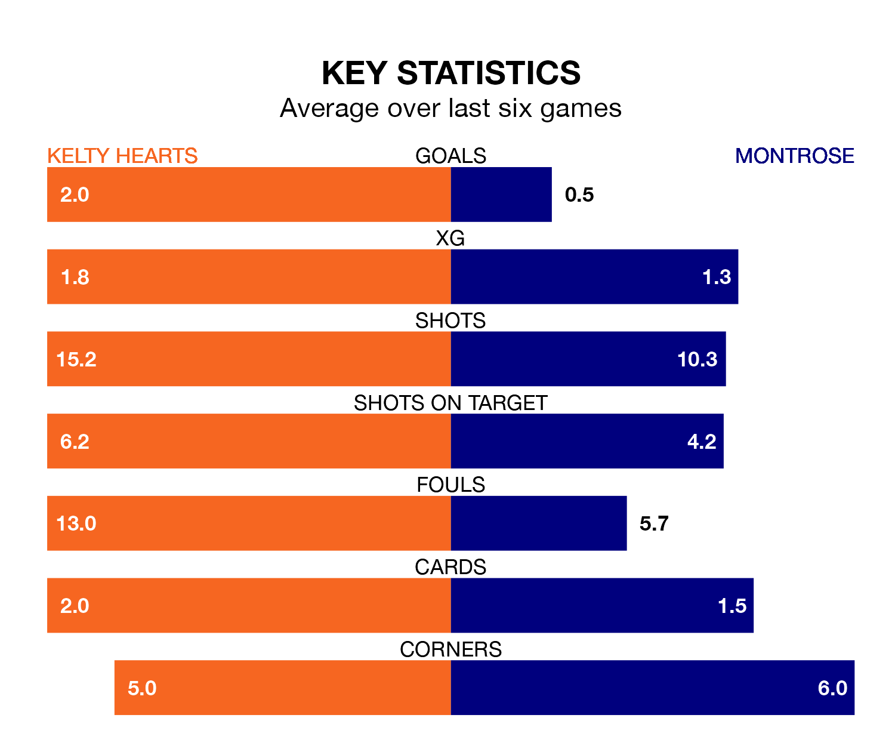

Montrose travel to New Central Park for Saturday's match against Kelty Hearts looking to bounce back from defeat last time out in League One.
The Gable Endies, who sit fourth in the league after 34 games, fell to a 2-1 home defeat to Hamilton Academical on April 20.
They face a Kelty Hearts side who secured a draw in their last match, a 2-2 tie with Falkirk, and who sit sixth in the table.
Kelty Hearts are in good form in League One, with four wins and a draw from their last six games.
With no wins and two draws over that period, Montrose's form is much worse – they have taken two points from 18, compared to the hosts' 13.
In the last 10 years, Kelty Hearts and Montrose have played each other on nine occasions. Kelty Hearts won one of them, Montrose five, and they drew three times.
On average, Kelty Hearts scored 1.1 goals and the Gable Endies 1.9 in those matches.
Their last meeting was on February 17, when Montrose won 4-2 at home.
With 47 goals in 34 games so far this season, Kelty Hearts are scoring at below the league average rate with 1.4 goals per game. And they are conceding more than average, letting in 57 goals at a rate of 1.7 per game.
The Gable Endies, meanwhile, are average scorers, with 1.6 goals per game. They have also conceded 1.6 goals per game.
In Cameron Gill, the away side can rely on one of the league's safest pair of hands. He has kept six clean sheets in his 34 appearances this season in League One.
In Kelty Hearts's net, Kyle Gourlay has five clean sheets in 34 games. He has conceded a goal every 59 minutes, only slightly more often than the 60 minutes between goals for Gill.
Updated: 07:59 (UTC), 26/04/24